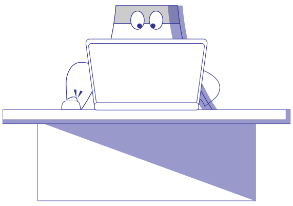

안녕하세요
FRONT-END DEVELOPER
문호균입니다
2018년부터 3년간 무노아트(MUNOART)라는 브랜드를 만고 활동하였습니다. 음악가들이 주 고객으로, 음악가 맞춤 굿즈 제작 330건, 커스텀 케이스 제작 59건, 비즈니스 명함 12건, 비즈니스 브랜딩 9건의 비주얼 서비스를 제공한 경험이 있습니다.
출판사인 겐토샤 디자인 프로 담당 디자이너로서 사업가들의 비즈니스에 적합한 북 커버 작업 6건을 진행한 경험이 있습니다.
현재는 시각 서비스에 관한 관심을 웹 개발로 가져왔습니다. 2021년에 드럼 스튜디오의 브랜딩 작업을 진행하게 되었고, 웹 제작 서비스 제공을 해보며, 만들어진 서비스가 즉각적으로 사용이 가능하다는 것과 기존 제작하던 인쇄 매체보다 더욱 접근성이 뛰어나고 공간의 제약이 없는 웹 제작에 흥미를 느끼고, Front-End 개발자가 되어 기존에 가지고 있던 시각 서비스 제공 경험을 웹 제작 서비스에서 제공하고 있습니다.
